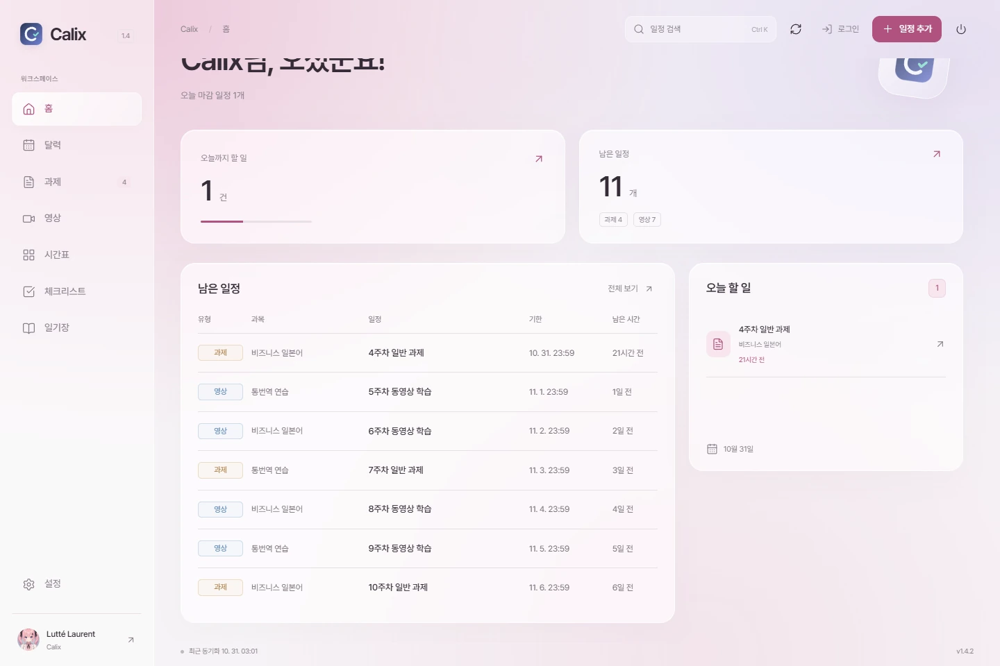
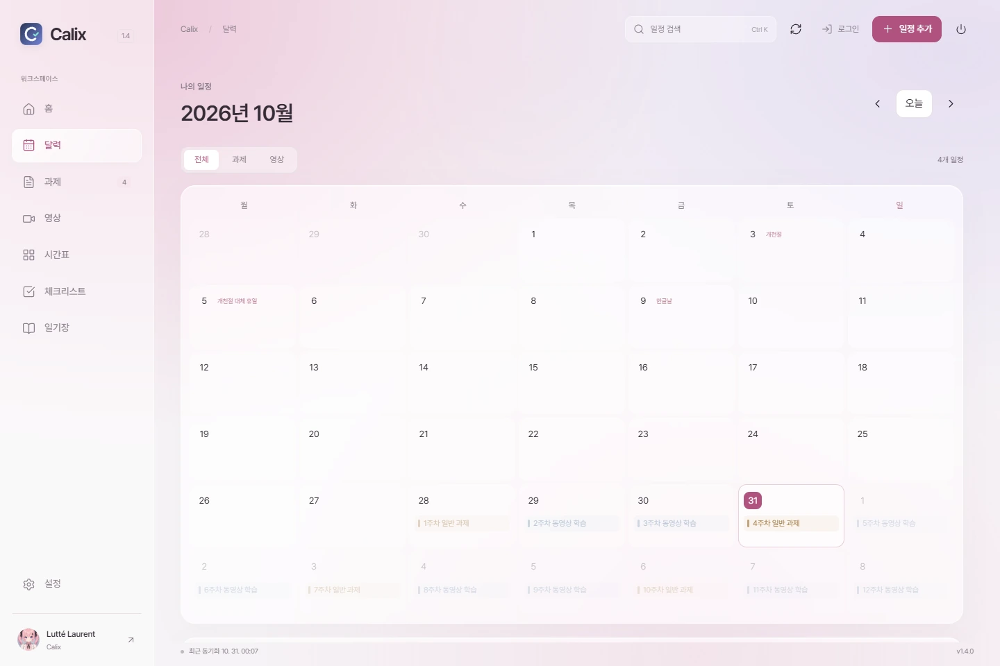
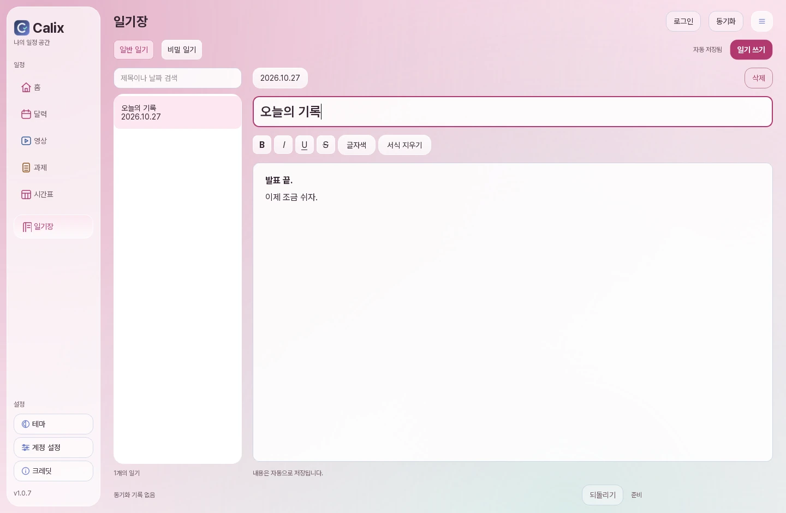

부산외대 Canvas 연동
Calix.
과제와 영상을 한눈에.
Windows용 다운로드Windows 10 / 11 v1.0.9-r7
The Smart Way to Ghost Your Absences.

일정
다가오는 마감부터.
Canvas와 동기화.
내 일정은 원하는 이름과 색으로.

과제영상직접 만든 유형이름과 메모는 동기화 후에도 그대로.
테마
핑크부터 다크까지.

일기
일반 일기와
비밀 일기.
굵게, 기울임, 글자색.
비밀 일기는 암호로 보호.
암호를 잊으면 복구할 수 없습니다.